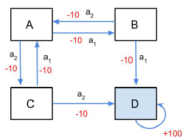

1 Policy
Let \pi denote a policy that maps state space \mathcal S to action space \mathcal A.
Types of policy:
- Deterministic policy : a=\pi(s),s \in \mathcal S, a \in \mathcal A
- Stochastic Policy : \pi(a|s)=P[a_{t}=a|s_{t}=s]
Example: Consider the Grid world :
Here states are from 1 to 14 and two shaded terminal states. And actions are {Right, Left, Up, Down}
Deterministic Policy : \pi(s) = \begin{cases} \text{Down} &\text{if } s=\{3,7,11\} \\ \text{Right} &\text{Otherwise } \end{cases}
Stochastic Policy: \pi(a|s) could be a uniform action between all available actions at state s. 25% chance of going in any direction
- A deterministic policy is easily exploited.
- A uniform random policy is optimal ( i.e. Nash equilibrium)
2 Value Functions with Policy
Given MDP with policy \pi we define the value of a policy as follows:
State-Value Function
The value function V^\pi(s) in state s is expected (discounted) total return starting from state s and then following the policy \pi
V^{\pi}(s)=\mathbb{E}_{\pi}\left(\sum_{k=0}^{\infty}\gamma^{k}r_{t+k+1}|s_{t}=s\right)
Example:
- sates are S=\{A,B,G_{1},G_{2}\}; states G_1 and G_2 are terminal sates.
- Two actions \mathcal A = \{a_1,a_2\}
- Value fo states \{A,B\} using forward policy \pi_f is given by, V_{\pi f}(A) = 11,V_{\pi f}(B) = 10
- Value fo states \{A,B\} using forward policy \pi_b is given by, V_{\pi b}(A) = 5,V_{\pi b}(B) = 6
3 Decomposition of State Value Function
The state-value function can be decomposed into immediate reward plus discounted value of successor state
V^{\pi}(s)=\mathbb{E}_{\pi}(r_{t+1}+\gamma V^{\pi}(s_{t+1})|s_{t}=s)
Expanding the expectation, with {\cal R}_{s s^{\prime}}^{a}={\cal R}(s,a,s^{\prime}) we get:
\mathbb{E}_{\pi}[r_{t+1}|s_{t}=s]=\sum_{a}\pi(a|s)\sum_{s^{\prime}}{\mathcal{P}}_{s s^{\prime}}^{a}{\mathcal{R}}_{s s^{\prime}}^{a} \tag{1}
and
\mathbb{E}_{\pi}[\gamma V^{\pi}(s_{t+1})|s_{t}=s]=\sum_{a}\pi(a|s)\sum_{s^{\prime}}p_{s s^{\prime}}^{a}\gamma V^{\pi}(s^{\prime}) \tag{2}
using equation (1) and (2) we get
\boxed{V^{\pi}(s)=\sum_{a}\pi(a|s)\sum_{s^{\prime}}\mathcal{P}_{s s^{\prime}}^{a}\left[\mathcal{R}_{s s^{\prime}}^{a}+\gamma V^{\pi}(s^{\prime})\right]}
\boxed{V^{\pi}(s)=\sum_{a}\pi(a|s)\sum_{s^{\prime}}\mathcal{P}_{s s^{\prime}}^{a}\left[\mathcal{R}_{s s^{\prime}}^{a}+\gamma V^{\pi}(s^{\prime})\right]}
This equation is called Bellman Evaluation Operator
4 Matrix Formulation of Bellman Evaluation Equation
V^{\pi}(s)=\sum_{a}\pi(a|s)\sum_{s^{\prime}}\mathcal{P}_{s s^{\prime}}^{a}\left[\mathcal{R}_{s s^{\prime}}^{a}+\gamma V^{\pi}(s^{\prime})\right]
Denote,
{\mathcal{P}}^{\pi}(s^{\prime}|s)=\sum_{a\in\mathcal{A}}\pi\bigl(a|s\bigr){\mathcal{P}}_{s s^{\prime}}^{a}
and
\mathcal R^{\pi}(s)= \sum_{a\in\mathcal{A}}\pi(a|s)\sum_{s^{\prime}}\mathcal{P}_{s s^{\prime}}^{a}\mathcal{R}_{s s^{\prime}}^{a}=\mathbb{E}(r_{t+1}|s_{t}=s)
Using \mathcal P^\pi and \mathcal R^ \pi, fot finite state MDP, Bellman evaluation equation can be written as
V^{\pi}={\cal R}^{\pi}+\gamma{\cal P}^{\pi}V^{\pi}\implies V^{\pi}=(I-\gamma{\cal P}^{\pi})^{-1}{\cal R}^{\pi}
5 Value Function Computation : Example
Consider below diagram :

- States S=\{A,B,C,D\}; State D is terminal state.
- Two action \mathcal A = \{a_1,a_2\}
- Stochastic Environment with action chosen succeeding 90% and failing 10%.
- Upon failure, agent moves in the direction suggested by the other action.
- Consider deterministic policy \pi_1 that choses action a_1 in all states.
- Transition matrix corresponding to policy \pi_1 is given by
\begin{bmatrix} &A&B&C&D \\ A&0&0.9&0.1&0\\ B&0.1&0&0&0.9\\ C&0.9&0&0&0.1\\ D&0&0&0&1 \\ \end{bmatrix}
- Values of the states under the policy \pi_1 is given by:
- V^{\pi_1}(D) = 100
- V^{\pi_1}(C) = 0.9\times [-10+V^{\pi_1}(A)]+0.1\times [-10 +V^{\pi_1}(D)]
- V^{\pi_1}(B) = 0.9\times [-10+V^{\pi_1}(D)]+0.1\times [-10 +V^{\pi_1}(A)]
- V^{\pi_1}(A) = 0.9\times [-10+V^{\pi_1}(B)]+0.1\times [-10 +V^{\pi_1}(C)]
Fom above we get three equations :
\begin{align*} 0.9\times V^{\pi_1}(A) - V^{\pi_1}(C) &= 0\\ -0.1 \times V^{\pi_1}(A)+V^{\pi_1}(B)&=80\\ V^{\pi_1}(A)-0.9\times V^{\pi_1}(B) - 0.1 \times V^{\pi_1}(C)&=-10 \end{align*}
Solving these we get:
V^{\pi_1}=\{75.610,87.561,68.049,100\}
Similarly if we choose \pi_2 in all the states, then V^{\pi_2} can be calculated following same approach:
V^{\pi_2}=\{75.610,68.049,87.561,100\}
6 MDP with Policy
MDP + POLICY = MRP
- MDP + policy = Markov Reward Process
- Given a MDP \langle \mathcal S, \mathcal A, \mathcal P,\mathcal R, \gamma \rangle and a policy \pi
- The MRP is given by \langle \mathcal S, \mathcal P^{\pi},\mathcal R^{\pi}, \gamma \rangle and a policy \pi
7 Action Value Function
The action-value function Q(s, a) under policy \pi is the expected return starting from state s and taking action a and then following the policy \pi
Q^{\pi}(s,a)=\mathbb{E}_{\pi}\left(\sum_{k=0}^{\infty}\gamma^{k}r_{t+k+1}|s_{t}=s,a_{t}=a\right)
The action-value function can similarly be decomposed as
Q^{\pi}(s,a)=\mathbb{E}_{\pi}(r_{t+1}+\gamma Q^{\pi}(s_{t+1},a_{t+1})|s_{t}=s,a_{t}=a)
Expanding the expectation we have Q^{\pi}(s,a) to be:
Q^{\pi}(s,a)=\sum_{s^{\prime}}\mathcal{P}_{s s^{\prime}}^{a}\biggl[R_{s s^{\prime}}^{a}+\gamma\sum_{a^{\prime}}\pi(a^{\prime}|s^{\prime})Q^{\pi}(s^{\prime},a^{\prime})\biggr]
8 Relationship between V^\pi(\cdot) and Q^\pi(\cdot)
Using definition of V^\pi(s) and Q^\pi(s,a) we can arrive at the following relationship :
V^{\pi}(s)=\sum_{a\in A}\pi(a|s)Q^{\pi}(s,a) Q^{\pi}(s,a)=\sum_{s^{\prime}\in{\mathcal{S}}}{\mathcal{P}}_{s s^{\prime}}^{a}\left[{\mathcal{R}}_{s s^{\prime}}^{a}+\gamma V^{\pi}(s^{\prime})\right]
Explanation : V^{\pi}(s)=\underbrace{\sum_{a\in A}\pi(a|s)}_{\substack{\text{take into account all the actions} \\ \text{that can be taken as per policy}}} Q^{\pi}(s,a)
Q^{\pi}(s,a)=\sum_{s^{\prime}\in{\mathcal{S}}}{\mathcal{P}}_{s s^{\prime}}^{a}\left[\underbrace{{\mathcal{R}}_{s s^{\prime}}^{a}}_{\substack{\text{reward for taking an}\\ \text{action in current state}}} +\underbrace{\gamma V^{\pi}(s^{\prime})}_{\substack{\text{follow the policy}\\ \text{from next state}}} \right]
9 Optimal Policy
Define a partial ordering over policies
\pi \ge \pi', \text{ if } V^\pi(s)\ge V^{\pi'}(s), \forall s \in S
Theorem
- There exists an optimal policy \pi_* that is better than or equal to all other policies.
- All optimal policies achieve the optimal value function, V_*(s)=V^{\pi_*}(s)
- All optimal policies achieve the optimal action-value function, Q_*(s,a)=Q^{\pi_*}(s,a)
Consider the Grid world, actions are left, right, up, Down , reward on all transitions : R_t=-1
Goal : Reach any of the goal state in as minimum plays as possible
Question : What could be an optimal policy to achieve the above objective ?
Question : How many optimal policies are there ?
Answer : There are infinite optimal policies (including some deterministic ones)
There wil be at least one policy that is deterministic
10 Solution to an MDP
Solving an MDP means finding a policy \pi_* as follows
\pi_{*}=\argmax_\pi \left[\mathbb{E}_{\pi}\left(\sum_{t=0}^{\infty}\gamma^{t}r_{t+1}\right)\right]
- Denote optimal value function, V_*(s)=V^{\pi_*}(s)
- Denote optimal action value function, Q_*(s,a)=Q^{\pi_*}(s,a)
- The main goal in RL or solving an MDP means finding an optimal value function V_* or optimal action value function Q_* or optimal policy \pi_*
11 Finding an Optimal Policy
Suppose we are given Q_*(s,a). Can we find an optimal policy ?
An optimal policy can be found by maximizing over Q_*(s,a)
\pi_*(a\mid s) = \begin{cases} 1 &\text{if } a=\argmax_{a\in \mathcal A} Q_*(s,a) \\ 0 &\text{if } \text{otherwise} \end{cases}
- If we know Q_*(s,a), we immediately have an optimal policy
- Note
There is always a deterministic optimal policy for any MDP
12 Greedy (Optimal) Policy
Greedy policy with respect to optimal (action) value function is an optimal policy.
An optimal policy can be found by maximizing over Q_*(s,a)
\pi_*(s) = \begin{cases} 1 &\text{if } a=\argmax_{a\in \mathcal A} Q_*(s,a) \\ 0 &\text{if } \text{otherwise} \end{cases}
13 Greedy Policy
For a given Q^\pi(\cdot,\cdot), define \pi'(s) as follows
\pi'(s) = \operatorname{greedy}(Q)= \begin{cases} 1 &\text{if } a=\argmax_{a\in \mathcal A} Q^\pi(s,a) \\ 0 &\text{if } \text{otherwise} \end{cases}
For a given V^\pi(\cdot) define \pi'(s) as follows
\pi'(s) = \operatorname{greedy}(V)= \begin{cases} 1 &\text{if } a=\arg\operatorname*{max}_{a\in A}\left[\sum_{s^{\prime}\in S}\mathcal{P}_{s s^{\prime}}^{a}\left(\mathcal{R}_{s s^{\prime}}^{a}+\gamma V^{\pi}(s^{\prime})\right)\right] \\ 0 &\text{if } \text{otherwise} \end{cases}
14 Relationship between V_*(\cdot) and Q_*(\cdot)
Using definition of V_*(s) and Q_*(s,a) we can arrive at the following relationship :
V_*(s)=\max_a Q_*(s,a) Q_*(s,a)=\sum_{s^{\prime}\in{\mathcal{S}}}{\mathcal{P}}_{s s^{\prime}}^{a}\left[{\mathcal{R}}_{s s^{\prime}}^{a}+\gamma V_*(s^{\prime})\right]
Explanation : V_*(s)=\underbrace{\max_a}_{\substack{\text{no need to take into account all the actions} \\ \text{just take max as max is optimal}}} Q_*(s,a)
Q_*(s,a)=\sum_{s^{\prime}\in{\mathcal{S}}}{\mathcal{P}}_{s s^{\prime}}^{a}\left[\underbrace{{\mathcal{R}}_{s s^{\prime}}^{a}}_{\substack{\text{reward for taking an}\\ \text{action in current state}}} +\underbrace{\gamma V_*(s^{\prime})}_{\substack{\text{follow the optimum policy}\\ \text{from next state}}} \right]
15 Policy Iteration
Is there a way to arrive at \pi_* starting from an arbitrary policy \pi, The answer is policy iteration.
- Evaluate the policy \pi
- Compute V^{\pi}(s)=\mathbb{E}_{\pi}(r_{t+1}+\gamma r_{t+2}+\gamma^{2}r_{t+3}+\cdot\cdot\cdot\cdot\vert s_{t}=s)
- Improve the policy \pi
- \pi^{\prime}(s)=\operatorname{greedy}(V^{\pi}(s))
\tiny {\textcolor{#808080}{\boxed{\text{Reference: Dr. Vineeth, IIT Hyderabad }}}}